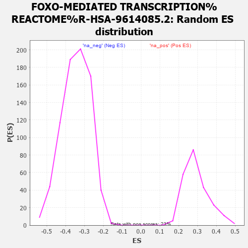

| | | Dataset | MBD2KO_post.rnk |
| Phenotype | NoPhenotypeAvailable |
| Upregulated in class | na_pos |
| GeneSet | FOXO-MEDIATED TRANSCRIPTION%REACTOME%R-HSA-9614085.2 |
| Enrichment Score (ES) | 0.5960608 |
| Normalized Enrichment Score (NES) | 2.0354097 |
| Nominal p-value | 0.0 |
| FDR q-value | 0.009983704 |
| FWER p-Value | 0.161 |
Table: GSEA Results Summary
 Fig 1: Enrichment plot: FOXO-MEDIATED TRANSCRIPTION%REACTOME%R-HSA-9614085.2
Fig 1: Enrichment plot: FOXO-MEDIATED TRANSCRIPTION%REACTOME%R-HSA-9614085.2
Profile of the Running ES Score & Positions of GeneSet Members on the Rank Ordered List
| PROBE | GENE SYMBOL | GENE_TITLE | RANK IN GENE LIST | RANK METRIC SCORE | RUNNING ES | CORE ENRICHMENT | | 1 | KAT2B | | | 43 | 11.597 | 0.0589 | Yes |
| 2 | FOXO3 | | | 46 | 11.493 | 0.1201 | Yes |
| 3 | TXNIP | | | 92 | 10.260 | 0.1718 | Yes |
| 4 | CAT | | | 185 | 8.821 | 0.2125 | Yes |
| 5 | BBC3 | | | 191 | 8.749 | 0.2588 | Yes |
| 6 | GADD45A | | | 211 | 8.525 | 0.3030 | Yes |
| 7 | BCL6 | | | 214 | 8.479 | 0.3482 | Yes |
| 8 | DDIT3 | | | 277 | 7.645 | 0.3847 | Yes |
| 9 | FOXO4 | | | 351 | 7.059 | 0.4173 | Yes |
| 10 | STK11 | | | 416 | 6.568 | 0.4479 | Yes |
| 11 | CDKN1B | | | 445 | 6.345 | 0.4798 | Yes |
| 12 | BTG1 | | | 547 | 5.706 | 0.5033 | Yes |
| 13 | SIRT3 | | | 578 | 5.511 | 0.5306 | Yes |
| 14 | CCNG2 | | | 780 | 4.450 | 0.5404 | Yes |
| 15 | EP300 | | | 818 | 4.294 | 0.5607 | Yes |
| 16 | CREBBP | | | 848 | 4.148 | 0.5809 | Yes |
| 17 | SIRT1 | | | 1091 | 3.361 | 0.5820 | Yes |
| 18 | CITED2 | | | 1137 | 3.220 | 0.5961 | Yes |
| 19 | NFYA | | | 1871 | 1.697 | 0.5542 | No |
| 20 | PINK1 | | | 1910 | 1.644 | 0.5603 | No |
| 21 | BCL2L11 | | | 2077 | 1.432 | 0.5564 | No |
| 22 | SREBF1 | | | 2191 | 1.317 | 0.5556 | No |
| 23 | NR3C1 | | | 2755 | 0.816 | 0.5208 | No |
| 24 | FBXO32 | | | 3386 | 0.448 | 0.4794 | No |
| 25 | CDKN1A | | | 3644 | 0.333 | 0.4634 | No |
| 26 | HDAC1 | | | 5472 | -0.126 | 0.3370 | No |
| 27 | POMC | | | 6141 | -0.284 | 0.2921 | No |
| 28 | NFYC | | | 6379 | -0.351 | 0.2775 | No |
| 29 | FOXO1 | | | 6424 | -0.363 | 0.2764 | No |
| 30 | PCK1 | | | 6603 | -0.413 | 0.2663 | No |
| 31 | ATXN3 | | | 7611 | -0.728 | 0.2002 | No |
| 32 | KLF4 | | | 7778 | -0.790 | 0.1928 | No |
| 33 | SIN3A | | | 8266 | -0.987 | 0.1643 | No |
| 34 | AKT2 | | | 8558 | -1.113 | 0.1500 | No |
| 35 | NFYB | | | 8979 | -1.300 | 0.1277 | No |
| 36 | YWHAQ | | | 9909 | -1.774 | 0.0726 | No |
| 37 | HDAC2 | | | 10075 | -1.872 | 0.0712 | No |
| 38 | SMAD4 | | | 10307 | -1.997 | 0.0658 | No |
| 39 | AKT1 | | | 10673 | -2.222 | 0.0523 | No |
| 40 | YWHAG | | | 11011 | -2.493 | 0.0422 | No |
| 41 | SOD2 | | | 11673 | -2.998 | 0.0122 | No |
| 42 | RBL2 | | | 12023 | -3.327 | 0.0057 | No |
| 43 | TXN | | | 13338 | -5.035 | -0.0587 | No |
| 44 | SMAD3 | | | 13484 | -5.303 | -0.0405 | No |
| 45 | SMAD2 | | | 13580 | -5.508 | -0.0177 | No |
| 46 | YWHAB | | | 13978 | -6.792 | -0.0090 | No |
| 47 | YWHAZ | | | 14132 | -7.621 | 0.0211 | No |
Table: GSEA details [plain text format]

Fig 2: FOXO-MEDIATED TRANSCRIPTION%REACTOME%R-HSA-9614085.2: Random ES distribution
Gene set null distribution of ES for FOXO-MEDIATED TRANSCRIPTION%REACTOME%R-HSA-9614085.2